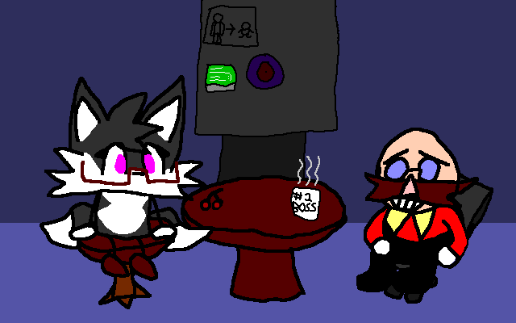

Speccy has existed since approximately 2017,
but wasn't really developed until mid-2020
during the COVID-19 pandemic.
Since then she's gone through various changes,
from being a simple Tails recolor, to eventually
becoming a three-tailed Kitsune with glasses.
She has (had, she's still in debt) a home in
Jade Coast Zone. One of the many places you
can find on the Jade Isles.
Being a Kitsune however isn't all that much.
For Speccy, it means she has a bunch of tails
to worry about!! At least she can use them
to her advantage, or for fun... like sending
Crawlas, (natural to the Jade Isles) into
orbit!! Hehehe...
Did you know she's friends with Eggman?
Not so many people know that, but it's true!

(see that machine in the background? more on that later)
It was shortly after the events of SRB2,
Speccy approached the now fallen madman and
helped him out since she wasn't going to just
let him suffer!
Speccy believes that there's kindness in
everyone out there. Even those who're clearly
in the wrong.
Anyways, this would eventually go away for
a bit in SpA2 but that's another story.
Now about that machine, that's the "Doodlerizer."
It's one of the Speccy universe-exclusive machines.
More info on it next website update. - Marilyn